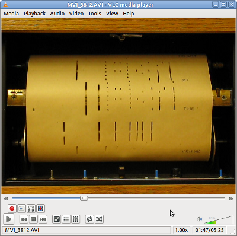
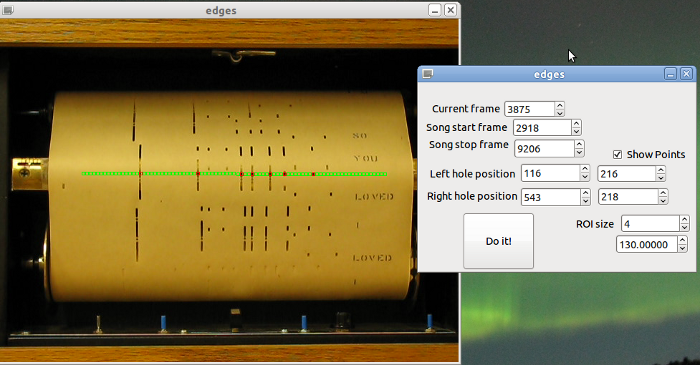

updated 6 January 2013
A player piano scroll:
Some time ago I played with a player piano I happen to have nearby. The piano itself is maybe 50ish years old. There are paper "scrolls" which contain the notes for each song to be played; when these are mounted to the piano and the appropriate switches are twiddled, the piano uses manipulation of air to put down each key when its corresponding hole in the scroll slides past (I don't know how it works specifically, but it appears to pull a light vacuum against the scroll). After a bit of messing around with it, I realized it would be relatively easy to read the scroll with a camera instead.
A bit of hackery over Christmas break, and this was the result (source; makefile that works on my particular Linux box, ymmv; GLADE file containing the adjustment UI--needs to be in ui subdirectory to work):
Each of the boxes painted on the video corresponds to the hole underneath the scroll, which corresponds to a key. The boxes are painted green when the program sees no note, and red when there is a note detected; this was for ease of adjustment of parameters--the window with the spinners on it allows for tweaking the positioning and size of the boxes, the start and stop frames of the song, and the "threshold" brightness at which point a note is played. The "Do It" button steps through each frame between the start and stop frames and writes a MIDI file with the appropriate note-on and note-off commands.
I used OpenCV for the video decoding; I simply had to ask it for color averages over each region of interest and look at the result to figure out if there are notes there. GTK+ gave me the window to the right with the spinners on it; my code to implement that is sloppy at best, but it works.
There are a few bits of hackery there--the movie file's expected to be in the same directory as the executable (I won't post it here since it is rather large and I don't want to irk my department's IT guys by sucking bandwidth too much...let me know if you are interested) and the MIDI file is written to that directory as well. Also, the lyrics that are printed on the scroll were being detected as notes, causing spurious trilling...I simply made none of the upper 10 notes cause any MIDI events. Also, "I think" I'm using the green channel of the video to do the thresholding...but I might not even be using the RGB color space, and I don't care to dig into that...it works. The point is that I got it to work "well enough"...it's just for fun, right?
The video's a little rough around the edges (wicked sync issues, OpenShot-induced), but I don't feel like futzing with it anymore...jump to about 0:30 to hear the synthesized version.
Any questions, shoot me an email... jarau at mtu dot (educational TLD).